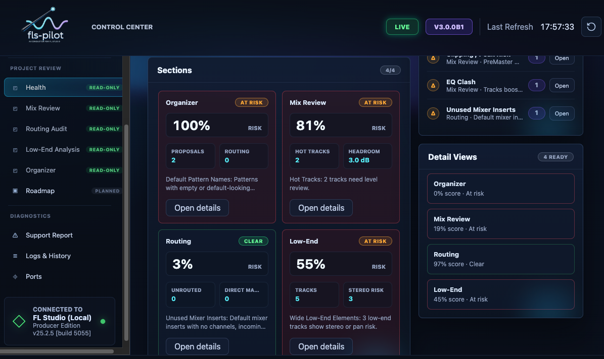
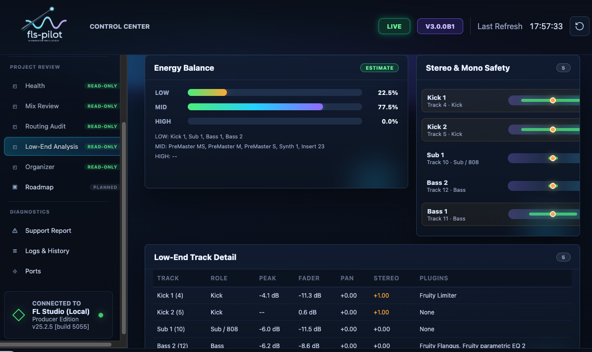
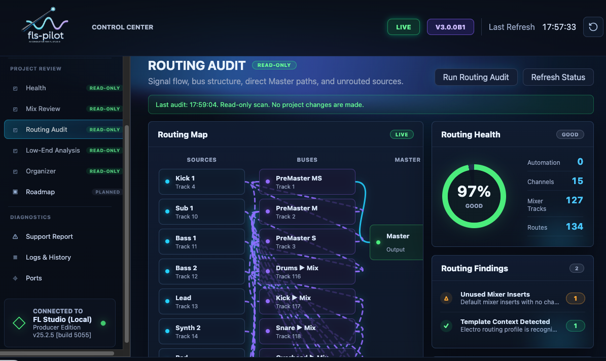
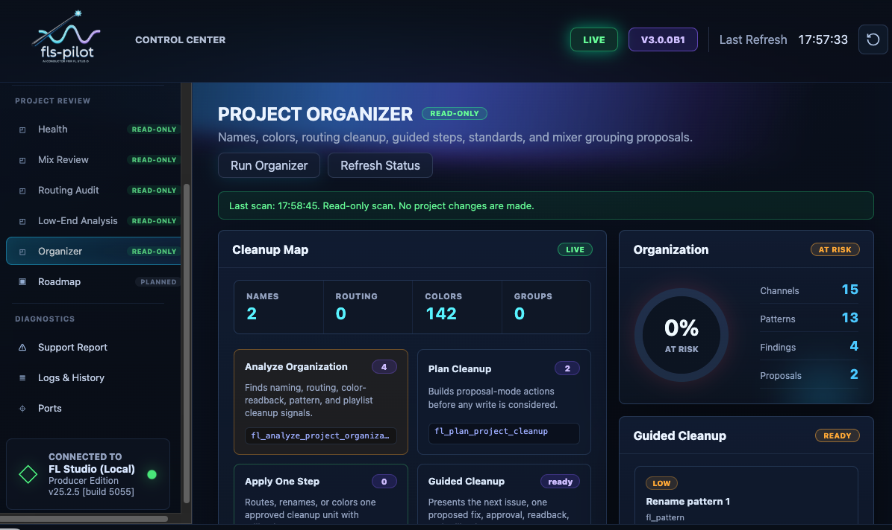
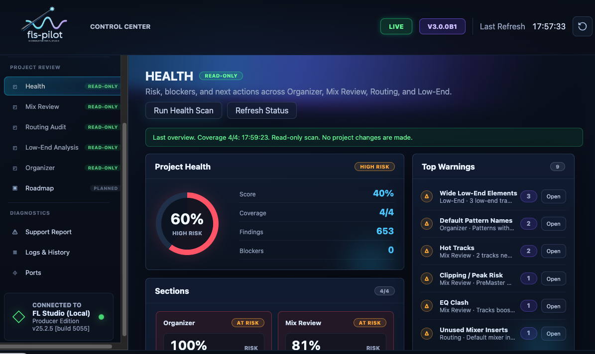

Workflows¶
fls-pilot is designed around producer workflows rather than one-off API calls. The safe default is read-only diagnosis first, then one explicit reversible change only after approval.
How it Works: 8 Production Phases¶
FL Studio's Python API is useful but has strict boundaries. This project combines safe controller calls, local file analysis, generated Piano Roll scripts, and a snapshot/rollback safety layer. The summary below explains what is automated and where FL Studio still requires manual action.
Phase 1: Ideation & Composition (Notes & Audio)¶
Audio Analysis (fl_analyze_audio, fl_extract_melody)
- The Limitation: FL Studio's API cannot read or analyze audio files.
- How it works: These tools read .wav or .mp3 files directly from disk and analyze them with Python libraries such as CREPE when the optional accurate audio extras are installed.
Piano Roll & Scales (fl_piano_roll, fl_scale_get)
- The Limitation: The API does not allow external programs to arbitrarily push notes directly into the Piano Roll at runtime.
- How it works: The assistant generates a temporary MCP_Apply script. A background daemon triggers the armed script with a keyboard shortcut (Cmd+Opt+Y on macOS), causing FL Studio to write the notes to the selected Piano Roll target.
Phase 2: Arrangement & Structure¶
Patterns & Playlist (fl_pattern, fl_playlist)
- The Limitation: Direct editing, splitting, or moving of Audio/MIDI clips in the playlist is blocked by the API.
- How it works: The assistant manages supported structure such as pattern creation, pattern cloning where exposed, section markers, and track metadata through unified domain tools.
Phase 3 & 4: Diagnosis & Preparation¶
Audio Clip Safe Defaults (fl_inspect_audio_clips)
- The Limitation: Deep Audio Clip features like "Stretch Pro" or the "Normalize" toggle are not exposed.
- How it works: The tools can apply safe Channel Rack volume limits, check for free mixer tracks, and generate manual checklists for Stretch/Normalize states that the FL API cannot verify.
Project Organizer (fl_channel, fl_mixer, fl_apply_color_standard)
- Safety: Renaming and coloring a large project uses scoped snapshots and named rollback units so supported changes can be audited and restored through the MCP safety layer.
Phase 5: Signal Flow & Routing¶
Routing Tools (fl_review_routing, fl_apply_bus_layout, fl_group_tracks)
- How it works: Routing tools detect structural issues, propose bus layouts, and apply supported routing changes as named rollback units.
Phase 6: Sound Design (The Strictest API Boundary)¶
Chain Planner & Presets (fl_setup_chain, fl_suggest_preset)
- The Hard Limit: It is technically impossible to load or insert a plugin via the FL Studio API.
- The workflow: The assistant scans FL Studio plugin database and preset folders on disk, suggests chains from what it finds, and can configure parameters after the user manually loads the chosen plugin.
Phase 7: Mixing & Dynamics¶
Mix Doctor (fl_review_mix, fl_mix_watch_start)
- The Limitation: A static "snapshot" of a song is useless because audio is dynamic.
- How it works: During peak watch, the user plays the song while the tool polls live API peak meters and keeps running peak evidence for each track.
Knowledgebase & Intents (fl_apply_eq_intent)
- The Problem: AI notoriously "hallucinates" plugin parameter values (e.g. setting a knob to 150% when the limit is 100%).
- How it works: Before sending supported parameter changes to FL Studio, the assistant checks requested values against Knowledgebase conversion entries such as kb_get_conversion and sends normalized values within verified ranges.
Phase 8: Export, Health & Safety¶
Project Health Checks (fl_check_project_preflight)
- How it works: Before a manual audio render, the assistant can run combined Mix Review, Routing Review, and cleanup checks to report export-readiness risks.
Audio Export (fl_export_midi)
- The Limitation: The API cannot click "Render to WAV".
- How it works: The tools write standard .mid files directly to disk for arrangement exports. Audio bouncing remains manual.
The Safety Layer (fl_rollback_last_change)
- The Limitation: FL Studio's native Undo (Ctrl+Z) is highly unreliable for API scripts.
- How it works: The MCP safety layer stores scoped snapshots and changelog entries for supported writes. Calling rollback restores the affected supported state through the MCP rollback path.
Detailed Examples¶
Mix Review¶
Mix Review reads live mixer and project context to find clipping, headroom, balance, routing, and low-end risks.

{kind=link}
Use prompts like:
Low-End Analysis¶
Low-End Analysis focuses on bass/sub structure, mono compatibility, suspicious stereo width, and master headroom.

Routing Audit¶
Routing Audit reviews mixer routes, bus structure, channels that skip groups, and fragile send/return layouts. Cleanup remains proposal-first.

{kind=link}
Project Organizer¶
Project Organizer finds naming, color, grouping, and routing cleanup candidates. It can propose one reversible cleanup step at a time.

{kind=link}
Plugin and EQ Workflows¶
fls-pilot can inspect already-loaded plugins and configure supported parameters when parameter ranges are known. It cannot load or insert plugins.
{kind=link}
Composition¶
Composition tools can generate scale-aware melodies, chords, and patterns. The assistant should preview notes first and wait for approval before writing to the Piano Roll.
{kind=link}
Project Health and Preflight¶
Project Health combines mix, routing, organization, and export-readiness checks into a single read-only overview.

Safe Operating Pattern¶
For any workflow that might write to FL Studio:
- Scan first.
- Explain the finding.
- Propose one reversible action.
- Ask for explicit approval.
- Apply one rollback unit.
- Report before/after and rollback details.